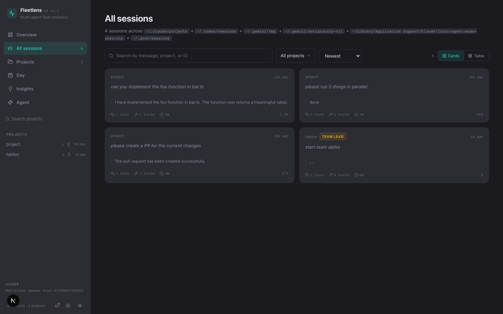
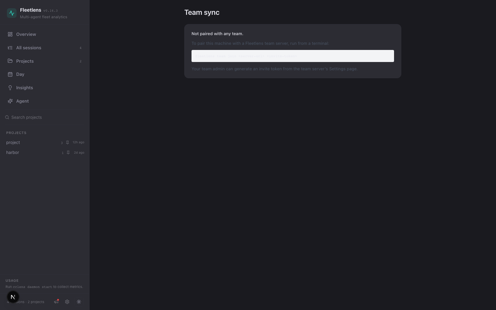

Fleetlens
local-first/agent fleet observability
A clear view of the agent fleet
See the whole fleet.
Understand the work.
Fleetlens turns raw sessions into a calm, useful picture of what ran, what changed, and what shipped.

04sessions in view
ready to understand
ready to understand
Overview dashboard
01 / 04
01 / ORIENT
One calm view of the fleet.
Sessions, agent time, tools, parallelism, and estimated cost — visible before you open a single transcript.
Agent timeParallelismEst. cost

Searchable session history
02 / 04
02 / FIND THE SIGNAL
Search the work, not the transcript.
Filter across projects, sort by recency, and jump from a fleet-wide view to the exact session that matters.
SearchProject filtersCards or table

Rich session detail
03 / 04
03 / READ THE WORK
From timeline to shipped context.
See turns, tools, active gaps, token totals, and the pull request signal in one readable session story.
TurnsTool callsShipping context

Team edition pairing
04 / 04
04 / SHARE THE SIGNAL
Move from local insight to team rhythm.
Pair a machine with the team edition in one command while keeping the local-first boundary obvious.
One commandInvite tokenTeam-ready
∿
Fleetlens
Make the fleet legible.
A local-first command center for sessions, agents, shipping signals, and team sync.